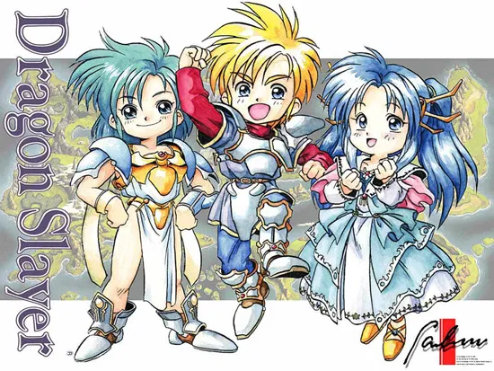

드래곤 슬레이어 시리즈 6편이자 영웅전설 시리즈의 첫 작품. 영웅전설 1, 2편을 묶어서 따로 '이셀하사 편'이라고 부르기도한다. 당시 기준은 물론 지금 봐도 여러모로 실험적인 측면이 강했던 드래곤 슬레이어 시리즈의 이전작들과 달리 드래곤 퀘스트 시리즈의 영향력 아래 있는 소위 '정통 일본식 RPG' 스타일을 지니고 있으면서 유저 친화적인 인터페이스와 난이도를 추구한 것이 특징. 그래서인지 본작에서 출발하는 영웅전설 시리즈 전반을 당시 일본 PC 게임업계에 보편적으로 퍼져있던 드래곤 퀘스트 아류작들에 대한 팔콤 나름의 재해석으로 보는 관점도 존재한다.
